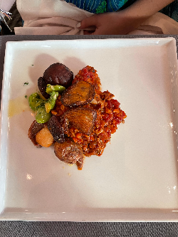
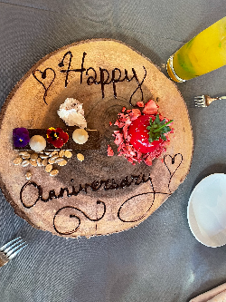
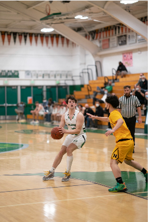
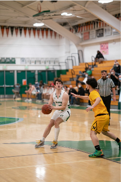
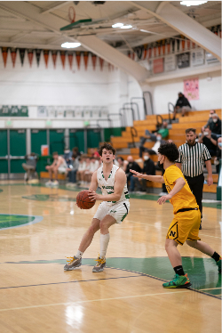

Louis Blackwell
I was born in London, UK but moved to San Francisco at an early age. Early on my parents got divorced so my childhood was less stable than others. But I was able to overcome this and succeed throughout my childhood and landed myself a spot at a top university like UCR. I was able to adapt to the American lifestyle very quickly due to my adaptability skills. I always played sports throughout my life so I have much experience working in a team.
During High School, I was the captian for my basketball team. This was because i demonstrated great leadership skills and great habits on and off the basketball court. My teammates would look to me for advice when they faced adversity. And I would always try to help them.
I'm a big believer in the Ubuntu philosophy. This is the concept that your group of people are one and that one persons success is everybodys success. This promotes a selfless environment and everywhere I go, I try to introduce and promote Ubuntu.
Experience
Cook
• Cooked and prepared meals for dinner service weekly
• Handled shipments of vegatables and meats
• Prepared deserts for guests at the restaurant
• Cleaned the kitchen after hours.
Captain of Varsity Basketball Team
• Responsible for leading team into games
• Leading the team through actions and words to victory
Member of Associated Student Body
• Put on events such as school dances for the student body
• A friendly face on campus
• Look out for bullying and stand up for students who don't stand up for themselves
Education
UC Riverside
Portfolio


 

